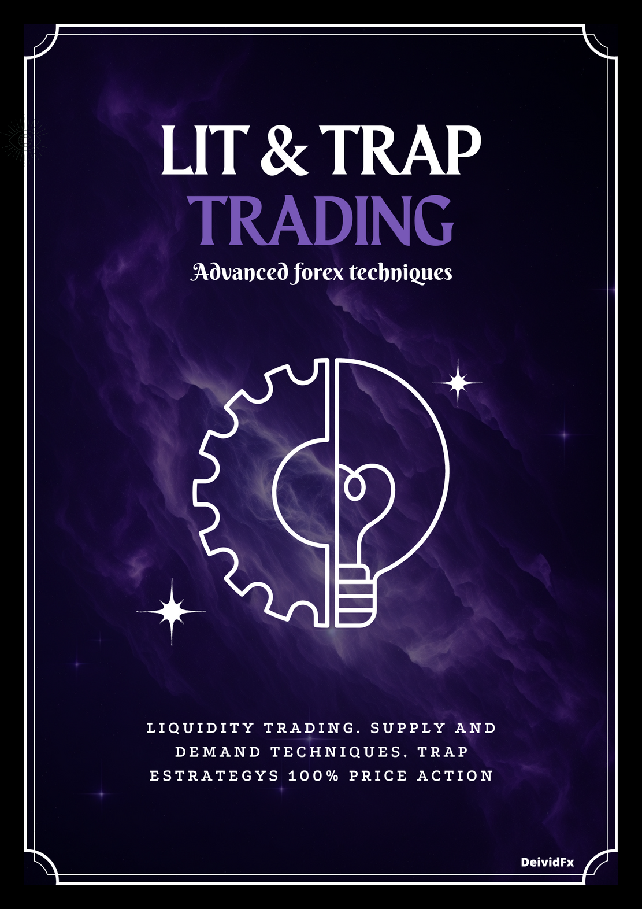
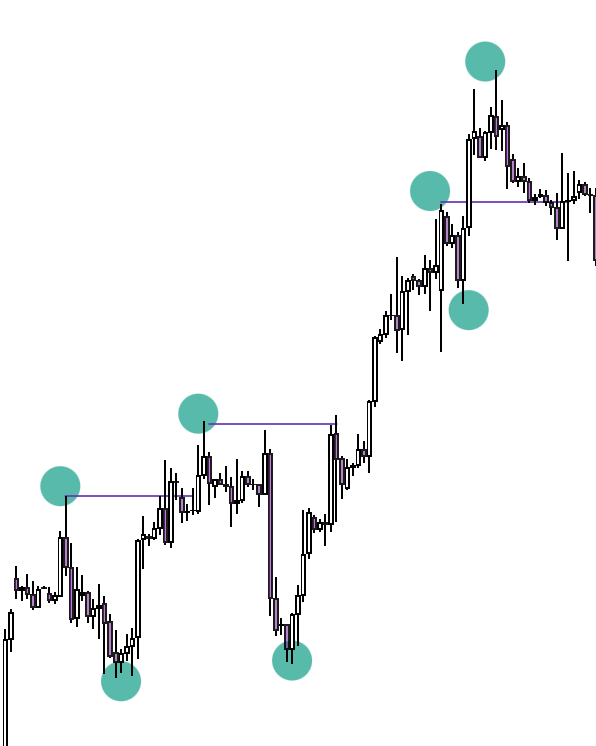
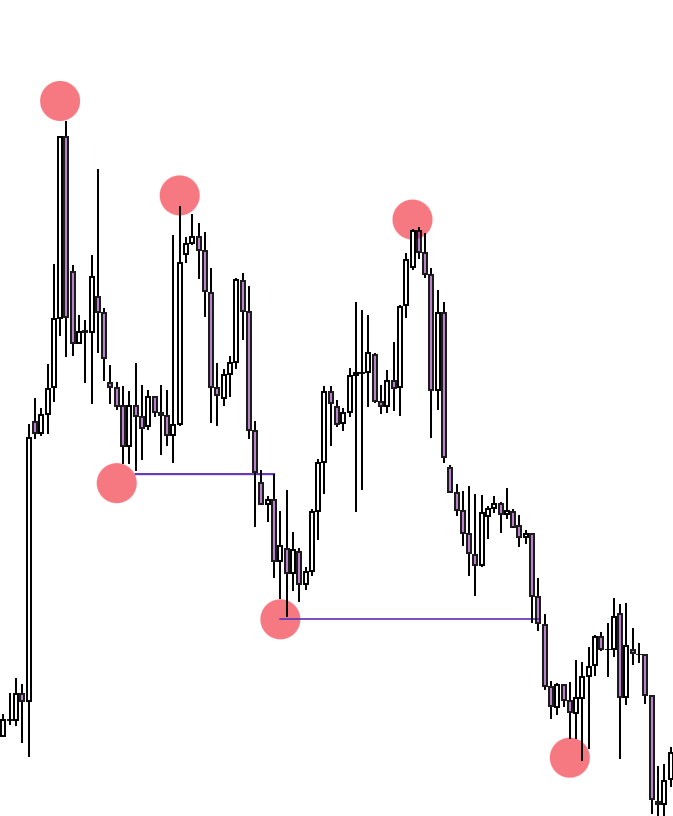
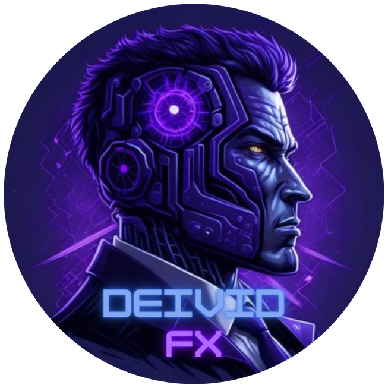

سلام دوست من! 👋 این راهنما را قدمبهقدم و به زبان ساده برایت آماده کردهایم تا از «دیدنِ نمودار» به «خواندنِ داستان قیمت» برسی. با ما تا انتها همراه باش.
این دو مفهوم به ما میگویند روند ادامه دارد یا بازمیگردد:


روند صعودی = سقفها و کفهای بالاتر | روند نزولی = برعکس. برای جهتیابی از H1/H4/D1/W1 استفاده کن؛ ساختار داخلی (M15) فقط برای ورود است و نباید جهت تایم بزرگ را عوض کند.
OB آخرین کندل قبل از حرکت مخالف؛ محل انباشت سفارش نهادی؛ حساسترین بخش = بدنه و ۵۰٪ آن. FVG شکاف بین دو سایه (ناکارایی) که قیمت دیر یا زود پرش میکند. IFC کندلی که آن FVG را شروع میکند. POI منطقهٔ واکنش در تایم بزرگ (H1+).


قوانین: BOS سقف/کف همجهت را میشکند | ChoCh کف/سقف خلاف جهت را | نقطهٔ شکستهشده بین دو impulso است.
Inducement سطوحی با نقدینگی retail که فقط برای وسوسه و جارو شدن استاپ توست. SMT نقطهای که نباید معامله کنی چون سلسلهمراتب آن را جارو میکند.

سلسلهمراتب: W1 ⟵ D1 H4 ⟵ H1 M15 ⟵ M1 (تایم بزرگ بر کوچک حاکم است). سطوح: Major: W1/D1/H4 | Medium: M15/M30 (رنج آسیا) | Minor: M5/M1.
هر سقف/کفی که به POI نمیرسد و قیمت رد میشود، نقدینگی میسازد و POI را قوی میکند. ترندلاینها هم همینطور. POI باید در Discount (خرید، زیر ۵۰٪) یا Premium (فروش، بالای ۵۰٪) باشد.


تریدر retail با الگوهای آشکار وارد میشود و استاپش مشخص است؛ ما خلاف جهت او و داخل Killzone معامله میکنیم؛ TP روی نقدینگی retail با R:R ≥ ۱:۴.

Breakout Push حرکت نهادی برای شکستن به سمت نقدینگی؛ بعد از جارو، نقطهٔ ورود و TP ماست.